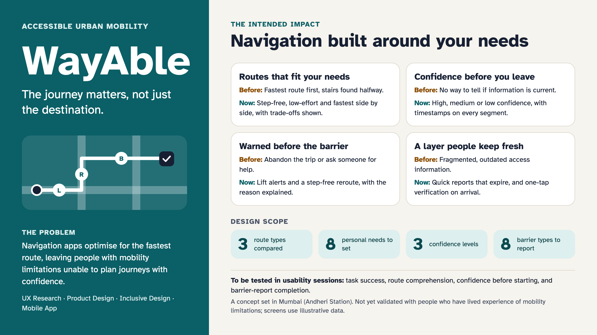

Requires step-free access, verified ramps, working elevators, pavement surface data, and accessible washrooms. One unverified staircase invalidates the entire route.
CASE STUDY · URBAN MOBILITY · ACCESSIBILITY · MUMBAI
WAYAble
Designing for journey confidence, not just the fastest route-an inclusive urban navigation concept for Mumbai that helps people with mobility limitations plan, verify, and complete journeys independently.
QUICK SUMMARY
WayAble - TL;DR
- The Problem: Mainstream maps optimize for minimum time, hiding stair-only foot-over-bridges, broken lifts, and steep footpaths across Mumbai's four fragmented infrastructure owners.
- The Core Model: Replaced stigmatizing disability labels with modular effort toggles, explicit route trade-offs (Fastest vs. Step-free vs. Low-effort), and a Time-Decayed Journey Confidence engine backed by recency timestamps.
- Prototype & Validation: 10 WCAG 2.2 AA screens scoped to Andheri Station last-mile trips, paired with a 5-participant comparative usability test targeting +40% pre-trip confidence and < 90s planning.
+40% Lift
Pre-trip confidence (≥ 4.2 / 5)
< 90 sec
Median destination-to-route time
< 20 sec
3-tap barrier report completion
< 2%
False-positive barrier guardrail
01 · EMPATHY & DISCOVERY
The fastest route is often a trap-and uncertainty is the real barrier. Scoped to last-mile journeys from Andheri Station, where accessibility data fractures across four disconnected owners.
MUMBAI INFRASTRUCTURE · 4 DISCONNECTED OWNERS
Railways · Municipal Paths · Crossings · Entrances
One unverified staircase or broken lift triggers an abandonment loop mid-trip.
JOURNEY
CERTAINTY
CERTAINTY
WAYABLE · UNIFIED END-TO-END LAYER
Modular Needs · Route Trade-Offs · Live Freshness
Bridges accessible destinations with verified, navigable segments along the way.
Can manage a few steps if needed, but prioritizes shorter walking distances, shaded seating/rest stops, fewer multi-lane crossings, and gentle inclines.
Recovering from surgery or injury; needs flexible, low-effort routes with minimal walking without permanently identifying as disabled.
Pre-verifies routes remotely on behalf of someone else; prioritizes high data certainty before committing to leaving home.
RESEARCH PLAN & HONEST DISCLOSURE
Ethical Outreach · No Fabricated Quotes
Recruiting participants with lived mobility limitations requires dedicated ethical outreach. Rather than inventing interview quotes, this concept is grounded in secondary research and competitive analysis, paired with a structured validation plan:
User Interviews (5–7)
Trip planning habits, abandonment triggers, and trust signals.
Contextual Inquiry (2–3)
Observing physical friction and cognitive load on real Mumbai trips.
Competitive Audit
Google Maps, Wheelmap, and AccessNow pattern & gap mapping.
Accessibility Audit
Full WCAG 2.2 AA contrast, focus, and motor target pass.
02 · DEFINE
"How might we give people with mobility limitations the confidence to plan and complete an entire urban journey independently?"
Accessibility is a spectrum of effort, not a binary filter
Wheelmap and AccessNow tell you if a destination is accessible; Google Maps tells you how to get there fast. A single "Wheelchair Accessible" toggle fails older adults, people on crutches, and caregivers.
Stale data is worse than no data
In a city with frequent construction and elevator outages, an unverified "Step-Free" label destroys user trust the very first time it fails mid-journey.
No disability-label onboarding
Replaced stigmatizing identity presets ("I am elderly") with modular, behavior-based preferences that adapt daily to fatigue, weather, or companions.
No AR street-view navigation
Holding a phone up in crowded Mumbai streets is unsafe with crutches, a cane, or a wheelchair. Prioritized high-contrast, glanceable 2D maps and audio cues.
No hidden "best route" algorithm
Exposes explicit time, walking distance, and barrier trade-offs side by side so the traveler retains full agency over their energy and schedule.
EXPLICIT ROUTE TRADE-OFF MODEL · ANDHERI CORRIDOR EXAMPLE
| Route | Time | Walking | Accessibility Trade-Off |
|---|---|---|---|
| Fastest | 28 min | 1.2 km | 3 staircases (high barrier risk) |
| Step-free | 36 min | 1.5 km | No stairs, verified ramps |
| Low-effort | 42 min | 900 m | Flat terrain + seating available |
THE INTENDED IMPACT · BEFORE VS. NOW & DESIGN SCOPE
Andheri Station · Illustrative Concept

03 · TRUST ARCHITECTURE
Solving the hardest crowdsourced UX challenge: preventing outdated or inaccurate reports from stranding a traveler.
Raw community feed
Showing every user comment chronologically creates cognitive overload and forces travelers to do mental math while commuting.
Static "Verified" badge
A permanent checkmark misleads travelers the moment a station elevator breaks down two hours later.
Time-Decayed Journey Confidence
Transparent confidence tiers (High, Moderate, Low) backed by recency timestamps. Weight decays by barrier type-flooding expires in hours; permanent ramps decay over months.
1. Plan
2. Set Needs
3. Compare
4. Confidence
5. Navigate
6. Report
Proactive pre-emptive alerts
When an outage is reported ahead (e.g., Andheri Station Platform 2 elevator), WayAble pushes a pre-emptive alert before commitment-paired with a dynamic reroute explaining why the path changed.
Frictionless mid-journey reporting
Reduced reporting to three taps with auto-captured GPS: Issue Type → Severity / Expiry → Optional Photo-so reporting never feels like a municipal complaint form.
04 · 10-SCREEN PROTOTYPE
Concentrated craft on the 10 highest-signal moments along the Andheri Station-to-destination journey, built for outdoor legibility.

Outdoor glare legibility
Minimum 4.5:1 text contrast and 3:1 UI component contrast so maps and alerts stay clear in harsh Mumbai sunlight.
Color never works alone
Every barrier, confidence tier, and route tag pairs color with distinct iconography and plain-language labels.
One-handed thumb-zone reach
Primary actions (confirm route, accept reroute, report barrier) sit in the lower thumb zone with minimum 48×48dp touch targets.
01
Home & Search
Recent places, saved stops, and one-tap mobility preferences.
02
Mobility Preferences
6 modular per-trip toggles (stairs, slopes, distance, lifts, rest stops, surfaces).
03
Route Comparison
Side-by-side Fastest, Step-free, and Low-effort trade-off cards.
04
Accessibility Map
Spatial layer for ramps, lifts, rest points, toilets, and live barriers.
05
Route Details
Segment-by-segment surface quality, slope, crossings, and entrances.
06
Live Navigation
Glanceable turn-by-turn cues anchored to accessible landmarks.
07
Disruption Alert
Timestamped outage warning with one-tap alternate route.
08
Report Barrier
One-handed 3-tap flow with auto-GPS, severity, expiry, and photo.
09
Dynamic Rerouting
Transparent recalculation banner explaining what changed and why.
10
Journey Completion
1-tap post-trip check ("Was this route accurate?") to refresh trust.
05 · TEST & ITERATE
Designed a 5-participant comparative usability study pitting WayAble against a conventional navigation app on the exact same Mumbai journey.
Comparative pre-trip test
Participants plan the Andheri Station-to-destination route in both apps to measure trade-off comprehension and self-reported confidence before starting.
Trust & timestamp stress test
Compare routes verified 12 mins ago vs. 3 weeks ago to test whether the confidence model calibrates trust without causing anxiety.
Disruption & reporting simulation
Trigger an unexpected elevator outage mid-trip to validate reroute clarity and one-handed barrier reporting under time pressure.
ITERATION TRIGGER A
Preference setup hesitation
If users hesitate on individual toggles, group them into quick-start templates ("Step-Free", "Low Effort") while keeping granular overrides one tap away.
ITERATION TRIGGER B
Alert fatigue or anxiety
If disruption alerts feel overwhelming, introduce a calmer two-tier hierarchy separating hard blockers (elevator out) from soft warnings (crowded footpath).
SUCCESS METRICS & BENCHMARKS
Two-tier evaluation framework covering immediate prototype usability targets and post-launch product health metrics.
TIER 1 · PROTOTYPE USABILITY & VALIDATION TARGETS
| Metric | What It Measures | Target Benchmark |
|---|---|---|
| Pre-Trip Confidence Rating | Self-reported confidence (1–5 scale) before starting vs. conventional maps | +40% lift (≥ 4.2 / 5) |
| Successful Route Selection | % of participants selecting a route that genuinely satisfies their constraints | ≥ 90% unassisted |
| Time to Plan | Median time from destination search to confirmed route | < 90 seconds |
| Preference Setup Completion | % of users configuring their mobility profile without friction or abandonment | ≥ 95% completion |
| Route Trade-Off Comprehension | % of users accurately explaining Fastest vs. Step-free vs. Low-effort | 100% comprehension |
| Barrier-Report Completion | Task success rate and speed of flagging a live obstruction | ≥ 85% in < 20 sec |
TIER 2 · PROPOSED POST-LAUNCH PRODUCT METRICS (IF SHIPPED)
NORTH STAR METRIC
Independent Trips
CORRIDOR COVERAGE
< 24h Freshness
TRUST LOOP
≥ 25% Verified
GUARDRAIL METRIC
< 2% False Positives
% of planned accessible journeys completed without mid-trip abandonment or unscheduled rerouting.
% of major Mumbai transit corridors with accessibility status verified within 24 hours.
% of completed trips where travelers tap the 1-step post-journey accuracy prompt.
% of "High Confidence" routes where travelers still hit an unreported impassable barrier.
NEXT CASE STUDY
FINBIT
White-label, audio-first financial intelligence across consumer listening and B2B partner consoles.
Let's make something
that actually matters.
sakshiagrawal3110@gmail.com